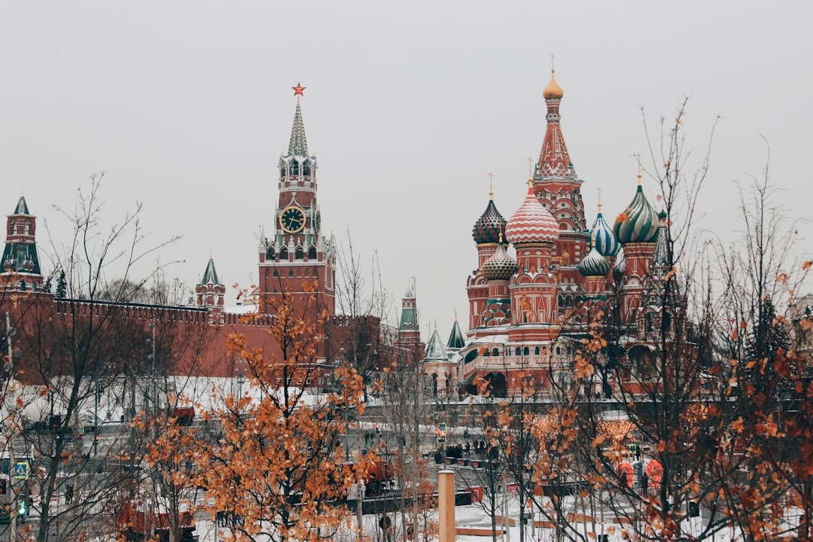

Самые красивые города россии
Что мы хотим вам показать?
Путешествие по городам России — занятие увлекательное и познавательное. Культурные, исторические и архитектурные достопримечательности, разные гастрономические традиции и часто удивительный, запоминающийся ландшафт — чтобы объехать и увидеть все самые красивые города страны, понадобится несколько лет. Мы собрали вместе двадцать из них — от восточных границ до западных. Каждый из них определённо заслуживает вашего внимания, а все вместе они дают прекрасное представление о разнообразии российских регионов.
Какие города мы рассмотрим
| Владивосток | Красноярск | Новосибирск |
| Екатеринбург | Самара | Казань |
| Йошкар-Ола | Нижний Новгород | Архангельск |
| Вологда | Ярославль | Владимир |
| Тула | Коломна | Москва |
| Санкт-Петербург | Дербент | Псков |
| Великий Новгород | Калининград |